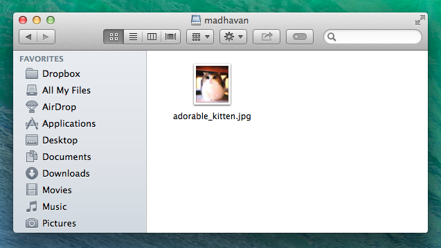

First, let’s make sure you can connect to the Central File Server. If you’re on campus network, you’ve got access! If not, get on it by setting up a VPN connection by following instructions for Mac or Windows.
Note: according to OIT, VPN will very soon be retired and replaced with Secure Remote Access (SRA).
Next, let’s get to your public_html folder!
-
For Mac, we connect to our public_html folder directly. (Warning: don't connect to your H: drive!) The simplest way to connect from a Mac is to connect through Finder. Follow the instructions below or in a little more detail here, from OIT here.
Open Finder, click Go in the top menu, and click "Connect to Server"

In the dialog that pops up, enter "smb://netid@files.princeton.edu/home/public_html/netid"

-
For Windows, we connect to our H: Drive and then open the public_html folder within. The instructions from OIT are pretty clear -- follow them here.
Once you're in, open your public_html folder--you're in!
-
If you're familiar with using commands like ssh and scp, you can easily ssh into your H: Drive. Make sure your Unix account is enabled by going here, and then ssh into netid@arizona.princeton.edu. From there, scp your files into the public_html folder!
Note that ssh is more secure, but that doesn't really matter when we're talking about a public site, right?
Now, you should be looking at a (probably empty) folder of your public_html folder. Anything you put in it will appear on the world wide web! If you put a file in your public_html folder, it will appear at www.princeton.edu/~netid/filename. For example, if I put the file "adorable_kitten.jpg" in my folder, you can see it here!
{kind=link}
Try it with a file and make sure it works!

Next, let's make this a working website. We've seen how to go to the url of a specific file -- but what happens when someone goes to www.princeton.edu/~netid without specifying a filename (basically, the whole folder)? Their browser will look for a file called "index.html". If you make an index file and stick it in your folder, that'll be your homepage!
Here's an example of a sample index file.
<html>
<head>
<title>Sample Homepage!</title>
</head>
<body>
<h1>Welcome to my website!</h1>
<p>Thanks for visiting my page! I'm a student and a pretty cool person. I once fought off a bear to save a crying baby! I also have purple hair.</p>
<p>Here are some links to things:
<ul>
<li><a href="http://www.princeton.edu/website.html">Here</a>'s the tutorial I got this from!
<li>Look at this cute <a href="adorable_kitten.jpg">kitten</a>.
</ul>
</body>
</html>
Copy and paste this into a text file, save it as "index.html" in your folder (beware: not "index.html.txt"), and go to www.princeton.edu/~netid. You should see this!
To understand what's going on, it's best to learn some basic html, which is the language all this is written in. Here's a good place to start learning! A great way to learn is to try replacing the text I wrote with your own. If something doesn't work, try again! A key thing to look it is that text in the href="_____" bit -- that's a link! Notice I can link to things in the public_html folder just by typing the filename.
A really easy way to make a nice website is to google a few templates, or learn about css. To easily make your website better, I recommend Bootstrap
Also, you'll notice that the website starts out in Times New Roman.. how boring! To add a little spice, we can style our text differently. Here's an example of a little more colorful page, with an image. This is what it should look like (unfortunately, it still looks like a 90s Geocities website).
<html>
<head>
<title>Sample Homepage!</title>
</head>
<body style="font-family: helvetica;">
<br/>
<br/>
<h1 style="color:red">Welcome to my website!</h1>
<p style="color:blue">Thanks for visiting my page! I'm a student and a pretty cool person. I once fought off a bear to save a crying baby! I also have purple hair.</p>
<p style="color:blue">Here are some links to things:
<ul style="color:green">
<li><a href="http://www.princeton.edu/website.html">Here</a>'s the tutorial I got this from!
<li>Look at this cute <a href="adorable_kitten.jpg">kitten</a>.
</ul>
<p style="color:blue">And here is a puppy!</p>
<img style="height:300px" src="http://i.imgur.com/qF1qfC9.jpg">
</body>
</html>
There you go -- you should have the beginning of a website! If you have any questions or want help making it prettier, feel free to email!